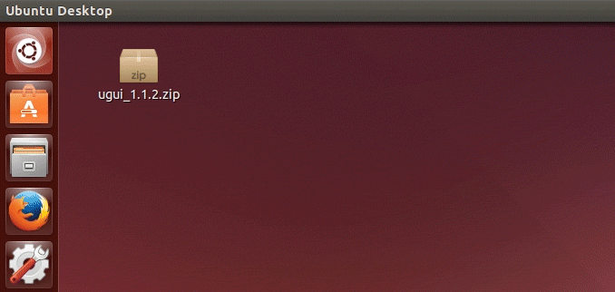
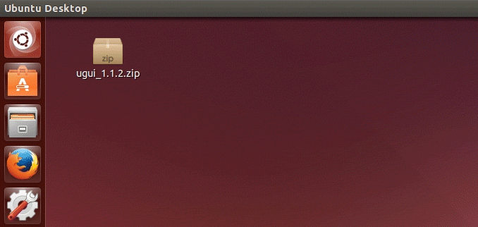
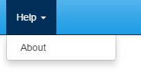

UGUI Documentation
Use the filter system above to only show the content that is relevent to you. This documentation is a work in progress. Areas that need improvement have been marked by four question marks like so: ????
The Basics/Getting Started
Before we get started, you'll need to know if your operating system is 32-Bit or 64-Bit to make sure you get the correct version of NW.js. On Windows, right-click on "Computer" and go to properties, or just press Windows Key + Pause/Break. On OSX, click the Apple icon in the top left of the screen and go to "About his Mac". Click on More Information. If you have an Intel Core Solo or Intel Core Duo, it's 32-Bit. Intel Core 2 Duo and all other Intel CPU's will mean you have a 64-Bit OS. For a full listing, see Apple's website. On Ubuntu Linux, click the top right power icon and go to "About This Computer".
Once you know if your OS is 32-Bit or 64-Bit, download the correct version of NW.js.
Then download a copy of UGUI. After you extract the UGUI project folder from the zipped archive, you should rename the UGUI folder to whatever your project name is.

 

Setting up your NW.js environment
Once you've downloaded NW.js, extract it's contents from the zip archive. Find an appropriate place for it's folder. For the purposes of this documentation, and tutorials, we will presume you've placed the NW.js folder in specific location.
In Windows we'll assume you've placed it in the root of your C: drive and renamed the folder to nw.
In OSX we assume you've placed it in your ???? and renamed the folder to nw.
In Ubuntu we assume you've placed it in your ???? and renamed the folder to nw.
Now you're ready to run your application for the first time!
nw.exe file. Follow this with a space and the path your project folder where the package.json file is. Like so:
C:\nw\nw.exe C:\Users\YOURNAME\Desktop\YOURPROJECTAnother way to run your project is to create a shortcut in your project folder that runs that same command. To do this, right-click an empty part of your project folder and select New > Shortcut. A new window will appear, type in that same command (pointing to nw.exe and your project folder) and press next. Name your shortcut something like "Run NW", then hit
Finish. Now you can simply double-click this shortcut any time you want to run your project.
Setting up your UGUI Project
package.json
In your project folder you'll find a package.json file. This is the configuration file that controls the way your application is displayed and behaves. Open it in any text editing application you're comfortable with (some common ones Sublime Text, Atom, Brackets, Notepad, TextEdit, gedit, or Notepad++) Each line is commented to explain the purpose of the line. Some of these are used by NW.js, some are used exclusively by UGUI, and some are used by both. Take a moment go line-by-line to familiarize yourself with the settings you have at your disposal and updating this file for your project. If a setting seems advanced or your not sure what it means, that's fine, just leave it at it's default setting.
index.htm
There are many aspects to the index.htm file that you should be aware, some parts will be covered in other sections below. Several parts of this file contain dummy data that will automatically be updated to reflect the content in the package.json file. For example the <title class="applicationTitle">Your Application Name</title> has the dummy "Your Application Name" text, however it is automatically updated to whatever value you set window.title to in the package.json. So although you can update these parts of the index.htm, you don't have to.
Changing the style theming
????
Adding in your arguments
????
About your program
In the index.htm towards the bottom is a section of HTML for the about modal. The about modal can be viewed when you run the UGUI app by clicking Help > About in the top navigation.

In the #aboutModal section of the index.htm file (towards the bottom) you'll find this chunk of code:
<div class="panel panel-primary">
<div class="panel-heading">
<span class="pull-right versionApp" title="Version">V0.1.0</span>
<h3 class="panel-title">About <span class="applicationName">Your Application Name</span></h3>
</div>
<div class="panel-body">
<p class="well well-sm">A detailed explanation of what your application does or is used for.</p>
<p>
<span class="applicationName">Your Application Name</span> created by <span class="authorName">Your Name</span><br />
<!--
Be sure to credit whoever made the command line executable.<br />
You should probably <a href="http://theirsite.com" class="external-link">link to their site</a> and give a version number for the CLI program.
-->
</p>
</div>
</div>
Some of the content in this code will be overwritten by what you've defined in the package.json file. Specifically, the version (V0.1.0), Your Application Name, and Your Name. Although you can change this content here in the index.htm file, they will ultimately be displayed in your app with what was written in the package.json.
The rest of the content in this section of code should be updated by you to reflect your application. You'll need to give a detailed explanation of what your app does or is used for and you should put in the version number for the command line program you're using and credit it's creators as well.
The link shown in the commented out example has a class of external-link, which means it will launch in the user's default browser rather than in NW.js.
Changing from Development to Production mode
????
Distribution
????
Single Folder Transfer Method
????
Packaging as Your_App.nw
????
Package your app with NW.js
????